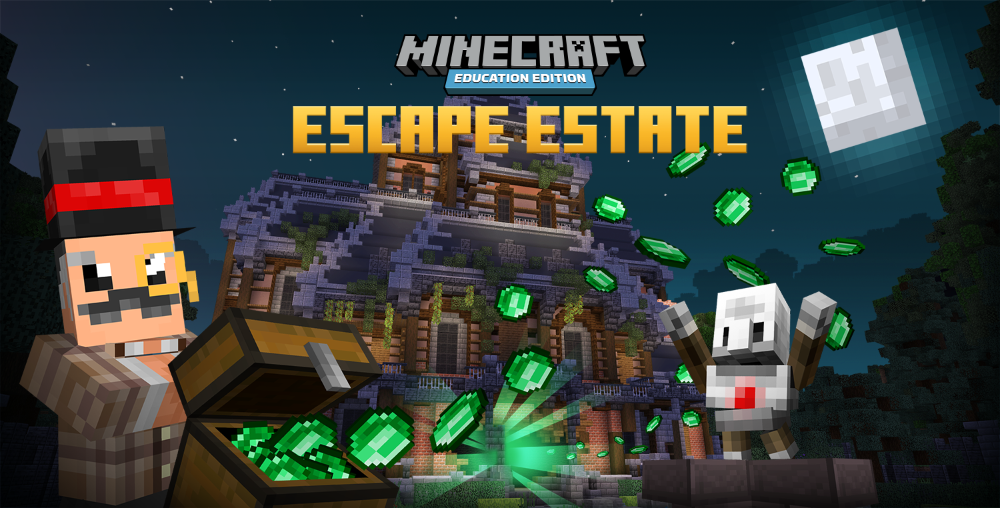
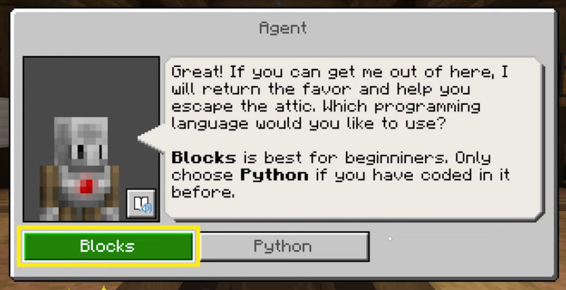
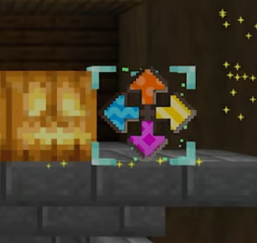
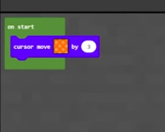
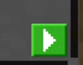

Para entrar na atividade de programação, você deve primeiro se logar no minecraft education (use seu e-mail e senha do login da escola. Seu e-mail é RA@escolavereda.com.br).
Depois vá clicando nos seguintes menus:
A opção "Hour of Code: Escape Estate" pode estar escrita em português também ("Hora do código escape da mansão"...). E nessa opção, você verá uma pequena imagem (thumbnail) parecida com isto:
1. Se você estiver fazendo a atividade no ipad, quando o jogo lhe perguntar, naturalmente escolha a opção de entrada via "Controle de Toque" e NÂO escolha a opção "teclado".
2. Sempre escolha a opção "Iniciar Tutorial", porque a opção de pular o tutorial não funciona direito.
3. Quando o jogo lhe perguntar qual linguagem de programação utilizar, escolha a opção "Blocks" (ou "Blocos").
4. Quando o jogo lhe pedir para clicar em um robozinho, ele está querendo dizer no ícone de robô que fica no parte superior central da tela.
5. Vários dos desafios envolvem deslocar um cursor ou algo parecido. O minecraft hour of code utiliza um código de cores para ilustrar qual direção você deve tomar. Então, se você observar o cursor, ele terá setas coloridas como a figura abaixo.
Então, o seu código deve levar em consideração as cores dessas setas para determinar para onde mover o cursor. Então, por exemplo a programação da figura abaixo move o cursor na direção da seta laranja.
6. Enquanto você fizer sua programação dentro desse bloco chamado "Ao Iniciar" (ou "on start"). Significa que este seu programa se iniciará no momento que você clicar na seta verde que fica no canto inferior.
